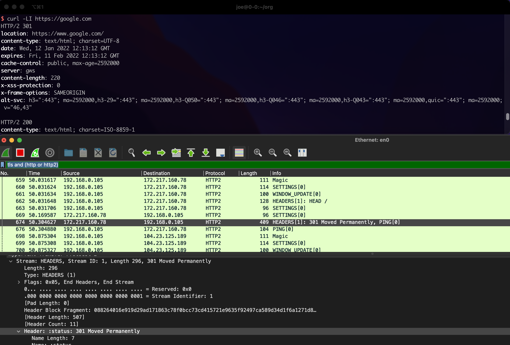

如何使用wireshark解密https流量
如何使用wireshark解密https流量
SSLKEYLOGFILE
在wireshark里有一个环境变量 叫SSLKEYLOGFILE 通过设置这个环境变量，可以解密https流量，以firefox为例不同的系统设置如下:
windows
set SSLKEYLOGFILE=%USERPROFILE%\Desktop\keylogfile.txt start firefox
Linux
export SSLKEYLOGFILE=$HOME/Desktop/keylogfile.txt firefox
macOS
export SSLKEYLOGFILE=$HOME/Desktop/keylogfile.txt open -a firefox
然后打开wireshark 修改以下配置
Edit->Preferences->Protocols->TLS->the (Pre)-Master-Secret log filename
之后可以通过 在过滤栏输入
tls and (http or http2)
查看过滤结果 如下图所示 
参考链接
[1] https://www.cryptologie.net/article/340/tls-pre-master-secrets-and-master-secrets/
[2] https://wiki.wireshark.org/TLS#using-the-pre-master-secret